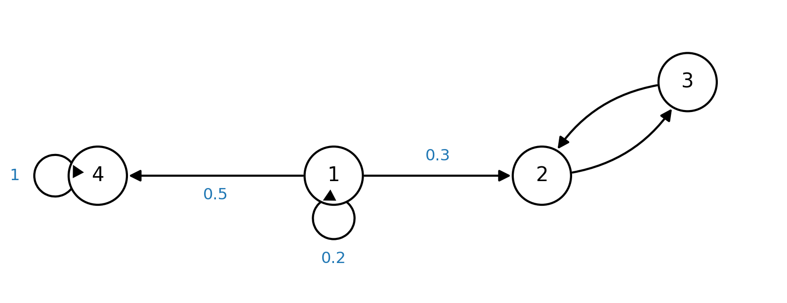
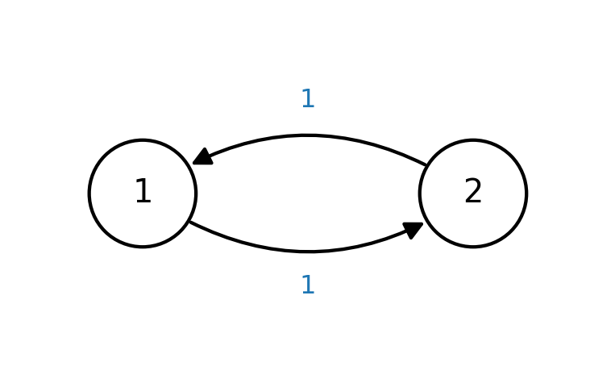

15 Markov Chains
A discrete-time Markov chain is a sequence of random variables in which each step depends only on the previous one (the Markov property), which greatly simplifies the calculation of long-time transition probabilities. This chapter covers the definition and transition matrix, \(n\)-step transition probabilities, communicating classes and irreducibility, stationary (invariant) distributions, periodicity, and the convergence theorems — the last of which underpin Markov Chain Monte Carlo (MCMC) methods.
15.1 Discrete-Time Markov Chains
Definition 15.1 (Discrete-time Markov chain) A sequence of random variables \((X_n)_{n \ge 0}\), where \(X_n : \Omega \to S \subseteq \mathbb{Z}\), is called a Markov chain with initial distribution \(\lambda\) if
- \(X_0\) has distribution \(\lambda\);
- it satisfies the Markov property \[ P\big(X_{n+1} = i_{n+1} \mid X_n = i_n, \dots, X_0 = i_0\big) = P\big(X_{n+1} = i_{n+1} \mid X_n = i_n\big) . \]
Remark.
- \(X_n\) denotes the state of the chain at time \(n\).
- \(S\) is the state space — all possible outcomes of each state.
- Writing \(P(X_{n+1} = i_{n+1} \mid X_n = i_n) = P_{i_n i_{n+1}}\), then for finite \(S\) the matrix \(P \in \mathbb{R}^{|S| \times |S|}\) is the transition matrix, and \(P_{i_n i_{n+1}}\) is the transition probability from state \(i_n\) to \(i_{n+1}\).
- Being probabilities, the entries satisfy \[ P_{ij} \ge 0, \qquad \sum_{j \in S} P_{ij} = 1 . \]
15.2 \(n\)-Step Transition Probabilities
The Markov property and the total-probability formula let us compute the \(n\)-step transition probability from the single-step transition matrix. We wish to calculate the probability that the chain is at state \(j\) after \(n\) steps starting from \(i\), and, more generally, the probability of being at \(j\) after \(n\) steps from any initial state.
Theorem 15.1 (\(n\)-step transition probability) Let \((X_n)_{n \ge 0}\) be a Markov chain with initial distribution \(\lambda\) and transition matrix \(P\). Then for all \(n, m \ge 0\):
- \(P(X_n = j \mid X_0 = i) = (P^n)_{ij}\);
- \(P(X_n = j) = (\lambda P^n)_j\).
Proof. The calculation is straightforward using total probability and the Markov property. For (2), sum over all intermediate paths and apply the Markov property repeatedly: \[ \begin{aligned} P(X_n = j) &= \sum_{i_0 \in S} \cdots \sum_{i_{n-1} \in S} P\big(X_n = j \mid X_{n-1} = i_{n-1}, \dots, X_0 = i_0\big)\, P\big(X_{n-1} = i_{n-1}, \dots, X_0 = i_0\big) \\ &= \sum_{i_0} \cdots \sum_{i_{n-1}} P\big(X_n = j \mid X_{n-1} = i_{n-1}\big)\, P\big(X_{n-1} = i_{n-1} \mid X_{n-2} = i_{n-2}\big) \cdots P\big(X_1 = i_1 \mid X_0 = i_0\big)\, P(X_0 = i_0) \\ &= \sum_{i_0} \cdots \sum_{i_{n-1}} \lambda_{i_0}\, P_{i_0 i_1} P_{i_1 i_2} \cdots P_{i_{n-1} j} = (\lambda P^n)_j . \end{aligned} \] For (1), condition on \(X_0 = i\) (so \(\lambda\) is replaced by a point mass at \(i\)): \[ P(X_n = j \mid X_0 = i) = \sum_{i_1 \in S} \cdots \sum_{i_{n-1} \in S} P_{i\, i_1} P_{i_1 i_2} \cdots P_{i_{n-1} j} = (P^n)_{ij} . \qquad \blacksquare \]
Remark.
- Using the matrix form assumes a finite state space; the summation identity, however, remains true when the state space is infinite.
- Statement (1) extends to the Chapman–Kolmogorov form \[ P(X_{n+m} = j \mid X_n = i) = (P^m)_{ij} . \]
15.3 Communicating Classes and Irreducibility
We now examine the asymptotic behavior of the state distribution: as \(n \to \infty\), does the chain tend to an equilibrium? Different states can behave very differently. The following example illustrates this.
For the chain above, note that:
- State \(1\) can access \(2, 3, 4\), while \(2, 3, 4\) cannot access \(1\).
- Once the chain enters state \(2\), it only transitions within \(\{2, 3\}\); similarly \(4\) is absorbing.
- When \(n\) is large enough, the state is “trapped” in \(\{4\}\) or \(\{2, 3\}\).
The following definitions formalize this observation.
Definition 15.2 (Leads to / accessible) We say state \(i\) leads to \(j\) (equivalently, \(j\) is accessible from \(i\)) if there exists a finite sequence \(i_1, i_2, \dots, i_{n-1}\) such that \[ P_{i\, i_1} > 0, \ P_{i_1 i_2} > 0, \ \dots, \ P_{i_{n-1} j} > 0 \quad\Longleftrightarrow\quad P(X_n = j \mid X_0 = i) > 0 \ \text{ for some } n \ge 0 . \]
Definition 15.3 (Communicate) We say \(i\) and \(j\) communicate if \(i\) leads to \(j\) and \(j\) leads to \(i\).
Definition 15.4 (Communicating class and closed class)
- A set of states is a communicating class (or recurrent class) if every pair \(i, j\) in it communicate. (Equivalently, a strongly connected component when the chain is viewed as a graph.)
- A communicating class \(C\) is closed if, for every \(i \in C\), whenever \(i\) leads to \(j\) then \(j \in C\).
Remark.
- Once the chain enters a closed class, it never leaves.
- An absorbing state is simply a singleton \(\{i\}\) that is a closed class.
- If a state \(i\) is not in any (closed) communicating class, then there is a state \(j\) accessible from \(i\) but with \(i\) not accessible from \(j\); for large \(n\) the \(i \to j\) transition occurs and the chain never returns. Hence we will focus on chains with a single communicating class, called irreducible.
15.4 Stationary (Invariant) Distributions
For an irreducible chain, does the probability of being in each state stabilize in the long run? By “stable” we mean that the state distribution does not change after a transition — hence the following definition.
Definition 15.5 (Stationary / invariant distribution) Let \(\lambda\) denote the probability distribution of state \(X\), i.e. \(\lambda_i = P(X = i)\). We say \(\lambda\) is a stationary (or invariant) distribution if \[ \lambda = \lambda P, \qquad \sum_i \lambda_i = 1 . \]
Remark. The definition means that a one-step transition of the current distribution, \[ \sum_j \lambda_j P_{ji} = \lambda_i , \] leaves it unchanged.
It can be shown that if the transition probability converges to a number independent of the initial state, then the limiting distribution is stationary/invariant (for finite state space).
Theorem 15.2 (A convergent limit is invariant) Let the state space \(S\) of a Markov chain \((X_n)_{n \ge 0}\) be finite, and suppose that for some \(i \in S\), \[ P(X_n = j \mid X_0 = i) = (P^n)_{ij} \to \pi_j \quad\text{as } n \to \infty, \ \ \forall j \in S . \] Then \(\pi\) is an invariant distribution.
Proof. Using \((P^n)_{ij} = \sum_{k \in S} (P^{n-1})_{ik} P_{kj}\) and interchanging limit and (finite) sum, \[ \pi_j = \lim_{n \to \infty} (P^n)_{ij} = \lim_{n \to \infty} \sum_{k \in S} (P^{n-1})_{ik} P_{kj} = \sum_{k \in S} \Big(\lim_{n \to \infty} (P^{n-1})_{ik}\Big) P_{kj} = \sum_{k \in S} \pi_k P_{kj} , \] so \(\pi = \pi P\). Also \[ \sum_{j \in S} \pi_j = \sum_{j \in S} \lim_{n \to \infty} (P^n)_{ij} = \lim_{n \to \infty} \sum_{j \in S} (P^n)_{ij} = 1 . \] Thus \(\pi\) is a stationary distribution. \(\blacksquare\)
Remark.
- The interchange of limit and summation is permitted for a finite state space.
- The theorem guarantees that a convergent distribution is invariant; the converse need not hold (invariance does not imply convergence — see below).
- For the probability to converge we must restrict to a single communicating class; otherwise \(\lim_{n \to \infty}(P^n)_{ij}\) depends on the initial state, as different initial states may lead to different recurrent classes.
Periodicity
Even for a single communicating class, existence of an invariant distribution does not guarantee convergence.

To exclude such cases we define the aperiodic property.
Definition 15.6 (Aperiodic) A state \(i\) is aperiodic if \((P^n)_{ii} > 0\) for all sufficiently large \(n\). A Markov chain is aperiodic if every state \(i \in S\) is aperiodic.
15.5 Convergence to Equilibrium
Theorem 15.3 (Irreducible + one aperiodic state \(\Rightarrow\) all states aperiodic) Suppose a Markov chain is irreducible and has an aperiodic state \(i\). Then for all states \(j, k \in S\), \((P^n)_{jk} > 0\) for all sufficiently large \(n\). In particular, all states are aperiodic.
Proof. Since the chain is irreducible, there exist \(r, s\) with \((P^r)_{ji} > 0\) and \((P^s)_{ik} > 0\). Then for sufficiently large \(n\), \[ \begin{aligned} (P^{\,n + r + s})_{jk} &= \sum_{i_1, \dots, i_n \in S} (P^r)_{j\, i_1}\, P_{i_1 i_2} P_{i_2 i_3} \cdots P_{i_{n-1} i_n}\, (P^s)_{i_n k} \\ &= \sum_{i_1, i_n \in S} (P^r)_{j\, i_1}\, (P^n)_{i_1 i_n}\, (P^s)_{i_n k} \\ &\ge (P^r)_{ji}\, (P^n)_{ii}\, (P^s)_{ik} > 0 , \end{aligned} \] choosing \(i_1 = i_n = i\), since \((P^n)_{ii} > 0\) (\(i\) aperiodic) and the end factors are positive (irreducibility). \(\blacksquare\)
For an aperiodic chain, the existence of an invariant distribution guarantees convergence to it.
Theorem 15.4 (Convergence to the invariant distribution) Suppose \((X_n)_{n \ge 0}\) is an irreducible and aperiodic Markov chain with transition matrix \(P\) and initial distribution \(\lambda\). If \(P\) has an invariant distribution \(\pi\), then \[ P(X_n = j) \to \pi_j \quad\text{as } n \to \infty, \ \ \forall j \in S . \] In particular, \((P^n)_{ij} \to \pi_j\) as \(n \to \infty\) for all \(i, j \in S\).
Theorem 15.5 (Finite irreducible aperiodic chains) Suppose \((X_n)_{n \ge 0}\) is an irreducible and aperiodic Markov chain with a finite state space. Then there exists a unique invariant distribution \(\pi\), and \(P(X_n = i) \to \pi_i\) for any initial distribution \(\lambda\).